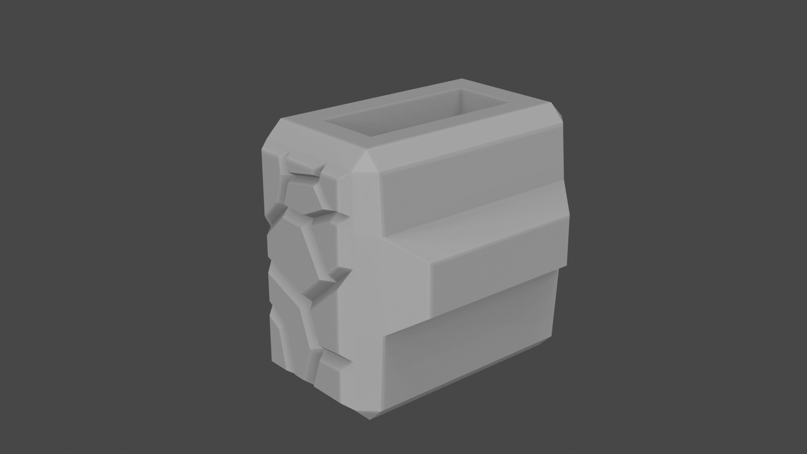
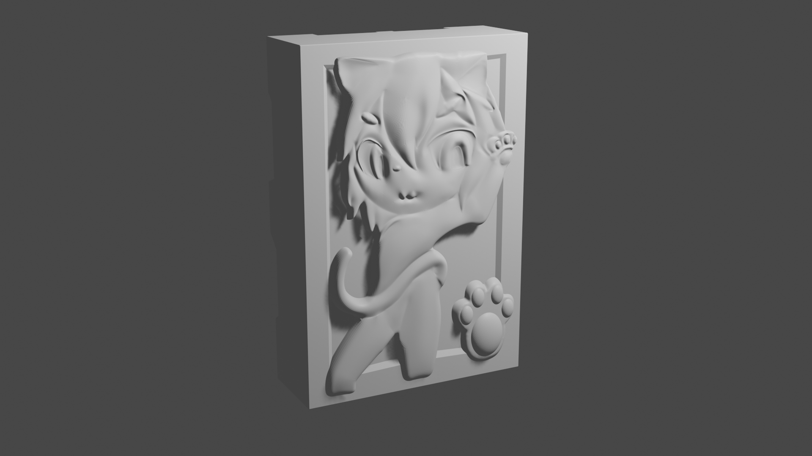
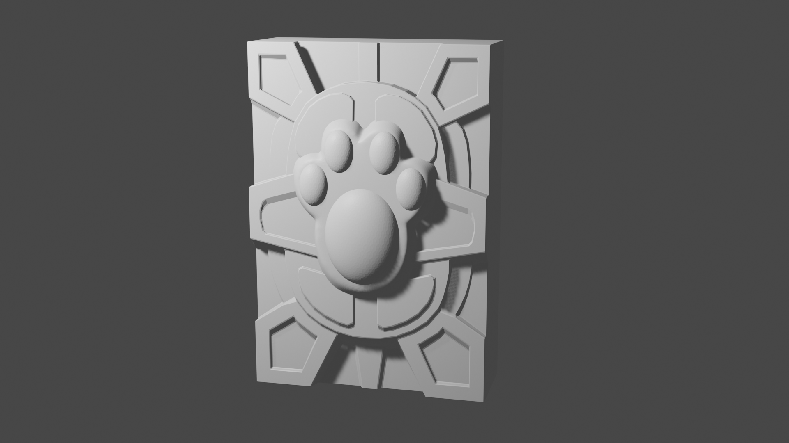
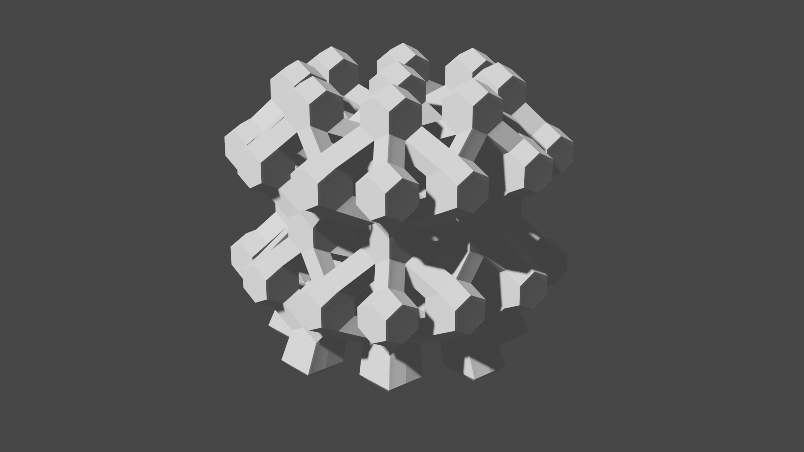
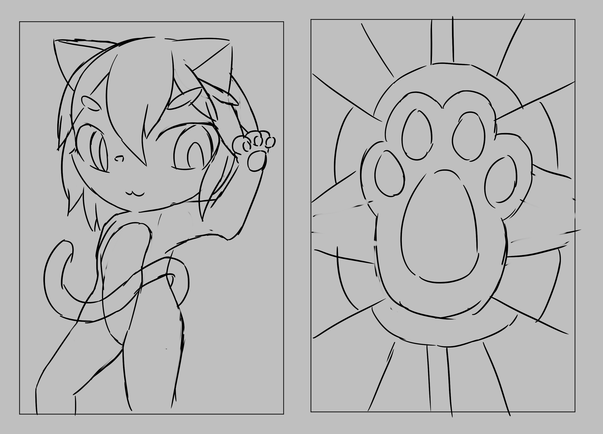

作業 03
若該次作業有程式碼，請放在 https://github.com/
你的帳號
/ct2023s/hw
03
/src/ 檔案夾。
連去 SRC
特殊的規律結構體是用Python的Blender API 建構出的模型
總分
完成後打勾
配分
分項描述
5
Simple baseline - 提供 Sketchup 設計的 png
3
Medium baseline - 在 Github 的 src 放入 skp/stl file
2
Strong baseline - 用 rhino (grasshopper) 做到參數化設計（水立方）並放上圖片
    